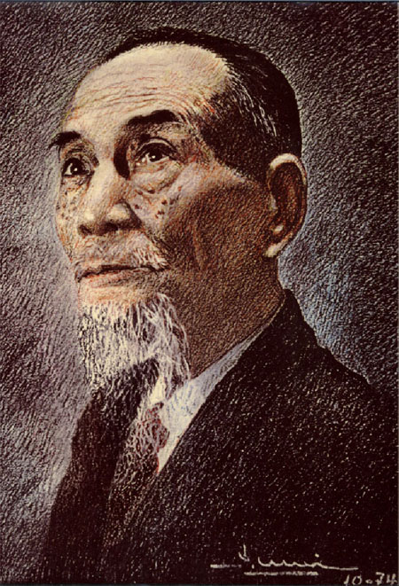

Trần Tuấn Khải (4 tháng 11 năm 1895 – 7 tháng 3 năm 1983) là một nhà thơ Việt Nam. Các bút danh của ông là: Á Nam (thường dùng), Đông Minh, Đông Á Thị, Tiểu Hoa Nhân, Lâm Tuyền Khách, Giang Hồ Khách, Lôi Hoàng Cư Sĩ.
Tiểu sử
Trần Tuấn Khải người làng Quan Xán, huyện Mỹ Lộc, tỉnh Nam Định. Xuất thân là nhà nho nghèo, có truyền thống yêu nước. Cha ông là Trần Khải Thụy đậu cử nhân khoa thi Hương tại Nam Định năm Canh Tý (1900). Năm lên 6 tuổi, ông bắt đầu học chữ Hán với cha. Và mẹ ông cũng là người thuộc nhiều ca dao, thi phú, lại hết lòng dạy dỗ con, vì vậy mới 12 tuổi, ông đã biết làm đủ các thể thi bằng chữ Hán.
Năm Giáp Dần (1914), cha ông lâm bệnh mất tại nơi nhiệm sở. Khi ấy, Trần Tuấn Khải vừa đúng 19 tuổi và cũng vừa lấy vợ được 1 năm. Qua năm 1919, ông trở lại làng Quang Xá dạy học, được ít tháng ông lại xuôi ngược khắp miền Bắc rồi đưa vợ ra Hà Nội. Nhưng ít lâu sau, thấy chồng ghét cảnh náo nhiệt, bà Khải bán nhà đến mua một trang trại ở ấp Thái Hà, ven đô Hà Nội.
Năm 1921, ông xuất bản tập thơ thứ nhất Duyên nợ phù sinh I, được giới văn học đương thời lưu tâm. Năm sau, ông được mời vào Ban biên tập nhật báo Khai Hóa tại Hà Nội và nhận lời viết giúp cho nhiều báo khác.
Đến khi ông cho xuất bản Bút quan hoài I, gồm nhiều bài bi tráng và được nhiều người hoan nghinh; Pháp ra lệnh cấm lưu hành và tàng trữ tập thơ đó (1927)
Trần Tuấn Khải mấy lần định xuất dương mà không thành (1915 -1916: dự định qua Đông Hưng (Trung quốc), 1927: dự tính sang Pháp). Pháp dò la biết ông có ý định trên, đồng thời có đến liên hệ các nhà cách mạng, như Phan Bội Châu, Huỳnh Thúc Kháng ở Huế; những nhà hoạt động lưu vong như Đào Trinh Nhất, Hoàng Tích Chu, Trần Huy Liệu, Nguyễn Trường Tam, v. v. ở Sài Gòn nên lùng bắt ông. Nhờ có người hay tin vội đưa ông ẩn trốn trong hang động Huyền Không trong dãy Ngũ Hành Sơn (Quảng Nam)
Năm 1932, tác phẩm “Chơi xuân năm Nhâm Thân” được xuất bản, nhưng ngay sau đó bị Pháp ra lệnh tịch thu, khám nhà rồi bắt giam Trần Tuấn Khải và chủ nhà sách Nam Ký. Ông bị giam hơn 2 tháng rồi bị kêu án 2 tháng tù treo về tội viết sách "phá rối trị an, xúi dân nổi loạn". Trong nhà giam Hoả Lò, Trần Tuấn Khải gặp được Nghiêm Toản và nhiều nhà tri thức có tâm huyết11.
Ra tù, vợ chết, con nhỏ chết. Chôn cất vợ con xong, ông trở về Thái Hà, lại bắt viết bài cho các báo. Năm 1938, ông cưới người vợ thứ họ Nguyễn.
Năm 1954 ông vào Nam làm việc tại Thư viện quốc gia, Viện khảo cổ, chuyên viên Hán học tại Nha văn hóa và các báo Đuốc Nhà Nam, Văn hóa nguyệt san, Tin văn, v. v.
Năm 1966, ông cùng một số trí thức tiến bộ kí tên yêu cầu chính quyền Việt Nam Cộng hòa trực tiếp hiệp thương với Mặt trận Dân tộc giải phóng miền Nam nhằm vãn hồi hòa bình, nên bị buộc nghỉ việc12. Sau đó, ông là chủ tịch danh dự lực lượng bảo vệ văn hoá dân tộc năm 1966 – 196713.
Sau ngày 30 tháng 4 năm 1975, ông giữ chức cố vấn Hội Văn nghệ Thành phố Hồ Chí Minh từ 1975 cho đến khi mất vì bệnh già tại cư xá Trần Quốc Toản (cư xá Liautey của Pháp), hưởng thọ 88 tuổi (1983).
Tác phẩm
Duyên nợ phù sinh I (1921), Duyên nợ phù sinh II (1922), Bút quan hoài I và Hồn tự lập I (1924), Bút quan hoài II và Hồn tự lập II (1927), Với sơn hà I (1936), Với sơn hà II (1949), Hậu anh Khóa (1975).
Tiểu thuyết: Gương bể dâu I (1922), Hồn hoa (1925), Thiên thai lão hiệp (1935- 1936).
Kịch: Mảnh gương đời (1925)
Dịch thuật: Thủy Hử (1925), Hồng Lâu Mộng và Đông Chu liệt quốc (1934), v. v.
Thành tựu nghệ thuật
Tự điển văn học có nhận xét như sau:
Văn xuôi của Trần Tuấn Khải tựu trung vẫn là lối văn cổ, từ hình thức đến nội dung đều có phần lạc hậu, chưa theo kịp đà phát triển của văn xuôi lúc bấy giờ. Thơ ca mới là phần chính trong sự nghiệp sáng tác của Trần Tuấn Khải và cũng là phần ông đạt được một số thành công nhất định.
Thơ Trần Tuấn Khải thường nói đến tình cha con, nghĩa vợ chồng, tình làng nghĩa nước, nghĩa dồng chủng, đồng bào, lòng thủ chung, nhân ái…; đó là nếp sống là đạo đức truyền thống của dân tộc.
Và thơ ông đều có ngụ ý nhắc nhủ về non sông, đất nước. Đất là cái nhìn ưu thời mẫn thế của tác giả, đồng thời đấy cũng chính là tình cảm phổ biến của nhiều người lúc bấy giờ: thiết tha với độc lập dân tộc. Chính vì thế mà thơ ca của ông được quần chúng yêu thích.
Các bài như “Gánh nước đêm”, "Tiễn chân anh Khóa", "Mong anh Khóa", "Gửi thư cho anh Khóa", trong một thời gian dài đã được truyền tụng rộng rãi.
Về mặt nghệ thuật, ngoài những bài được sáng tác theo thể thơ Đường luật, ông còn viết bằng các thể thơ thuần Việt như: lục bát, song thất, các điệu hát ví, hát xẩm, sa mạc, hát nói và phần thành công chính là ở đây (NXB KHXH, Hà Nội, 1984, tr. 438).
Nguyễn Tấn Long viết14:
Thơ Trần Tuấn Khải không chứa đựng triết lý bí hiểm, tư tưởng cao siêu, nó giản dị như một chân tình, nó rỡ ràng như sự phơi bày trọn vẹn cả tấc lòng; người đọc dễ dàng đạt ý và rung động qua trực cảm, vì Á Nam đã cấu tạo thơ mình bằng nhạc điệu quen thuộc của dân tộc, cho nên sức truyền cảm rất bén nhạy.
Khảo sát thơ cụ, chúng tôi bắt gặp đó đây những tư tưởng đã thành châm ngôn và cũng không ngoài việc gieo vào lòng người một ý chí bất khuất, một hùng khí ngùn ngụt, một nghĩa vụ thiết yếu của con người đúng với danh nghĩa “làm người” của nó.
o0o